Nature Spirit
Scripts in
scripts/quests/quest_druidspirit/NPCs involved
Items involved
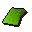
A used spell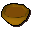
Curry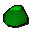
Druid pouch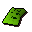
Druidic spell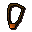
Ghostspeak amulet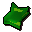
Journal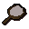
Mirror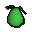
Mort myre pear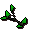
Mort myre stem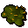
Rotten food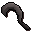
Silver sickle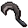
Silver sickle(b)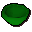
Washing bowlInvolvement is derived from identifiers referenced by the quest scripts.